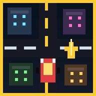

Offline
Pixel City is installed, but this route is not cached yet. Reconnect once, open the game, and the city shell will stay ready for future offline sessions.
Connection required

Pixel City is installed, but this route is not cached yet. Reconnect once, open the game, and the city shell will stay ready for future offline sessions.